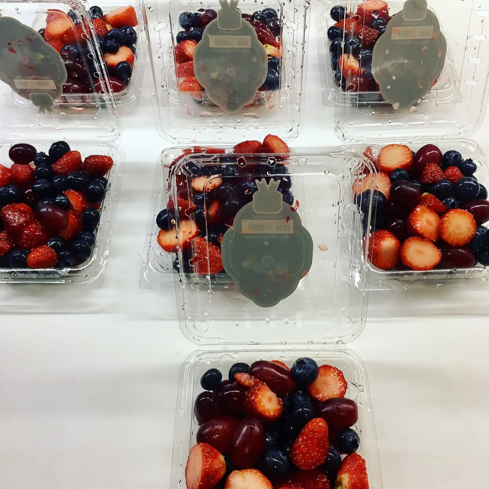
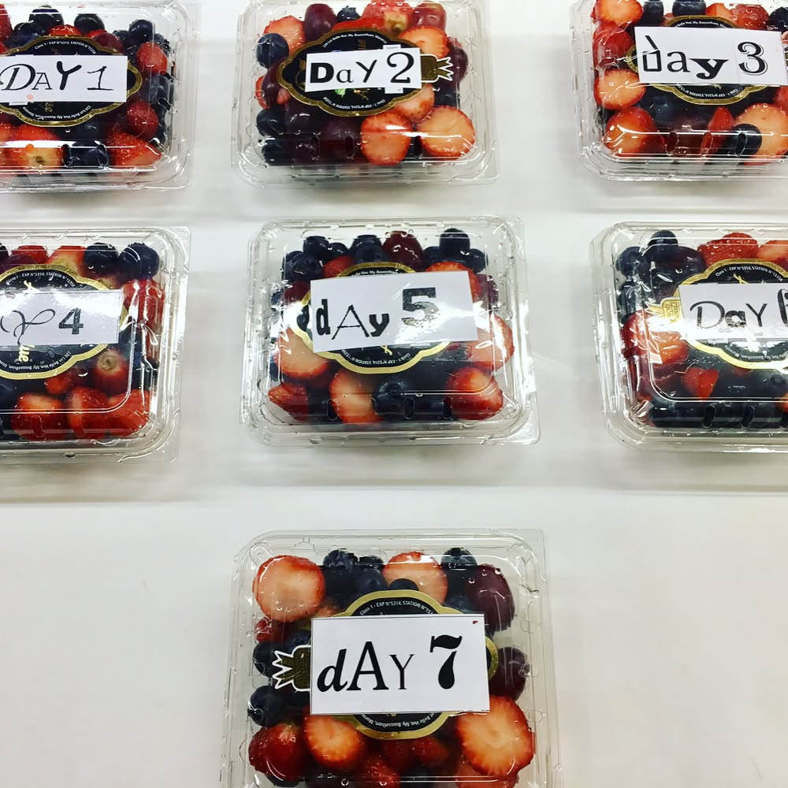
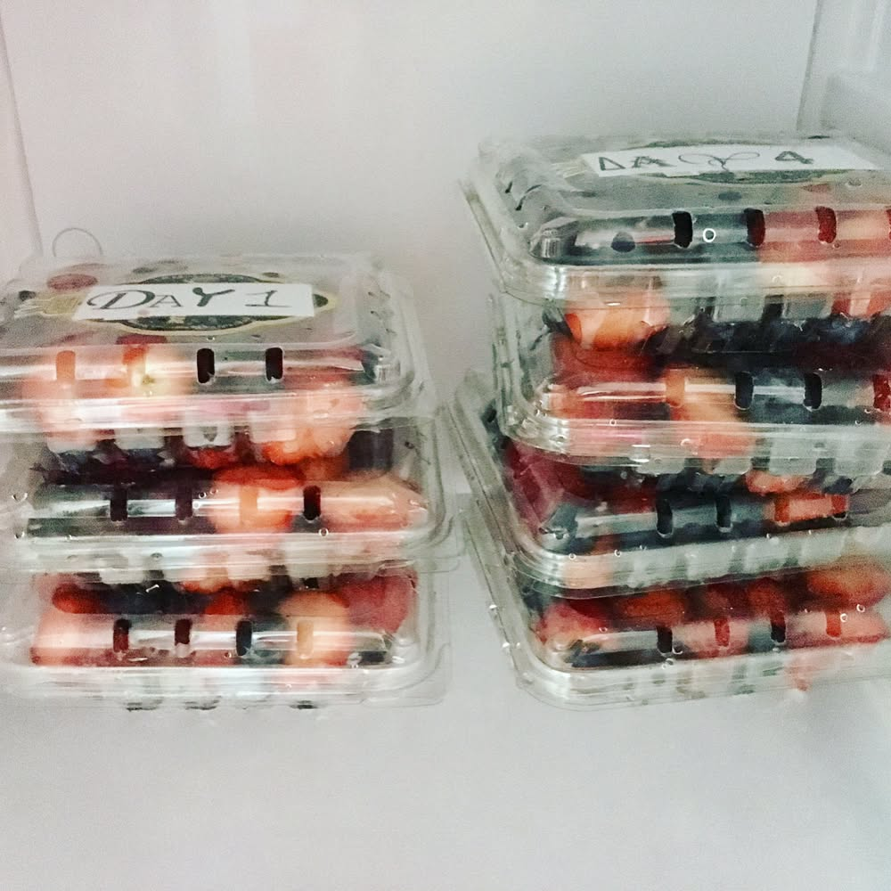
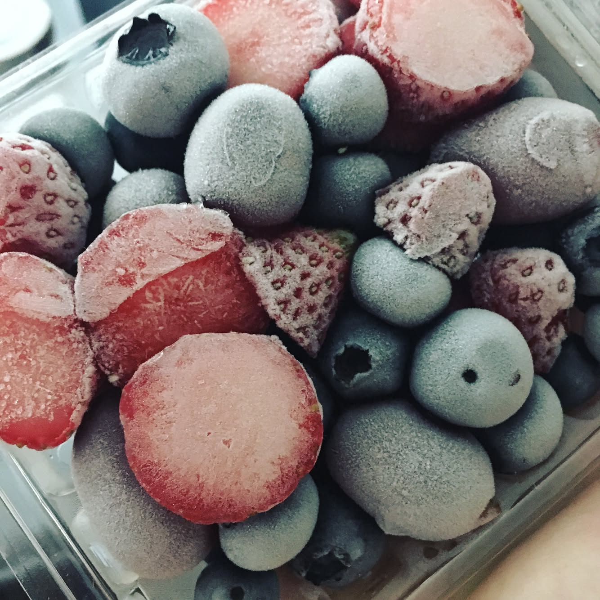

Smoothie tips 😉 prep your fruits & berries in advance - making cool healthy breakfast in the morning will be easier 👍🏼 ------- #triathlon #ironmantri #healthyfood #sportnutrition #running #swimbikerun #dietfood #cervelo #orbea #specializedbikes #giantbikes #canyonbikes #bmcbikes #boardmanbikes #ironmantraining #marathontraining #trailrunning #marathon #smoothie #powerbreakfast
2017-05-05 20:26:08
Back to main page